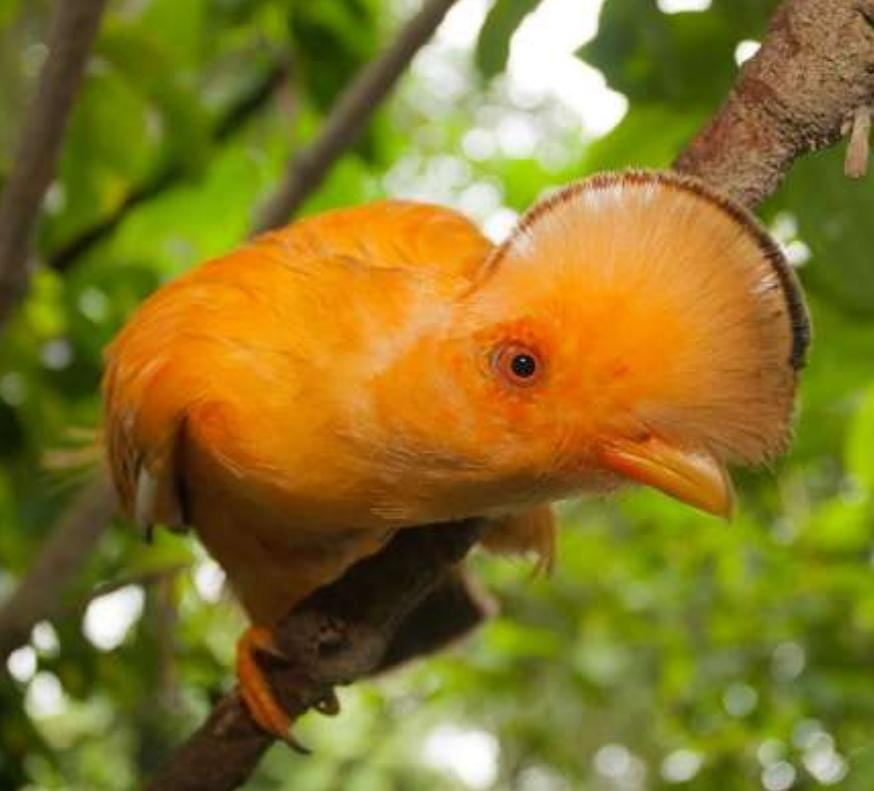
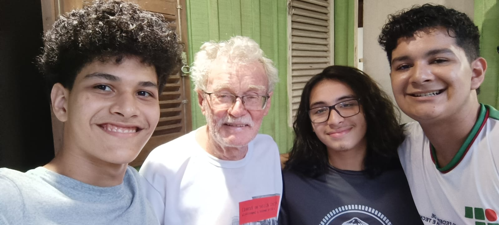
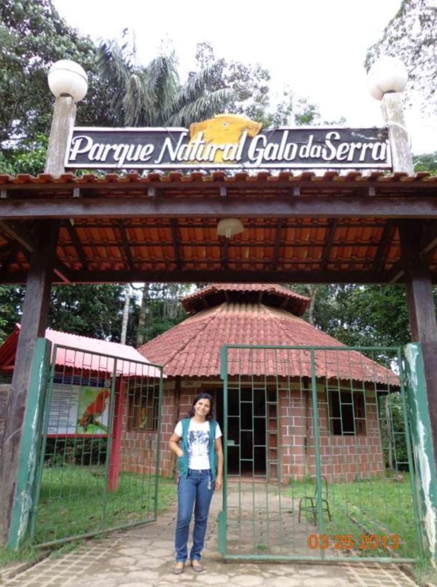
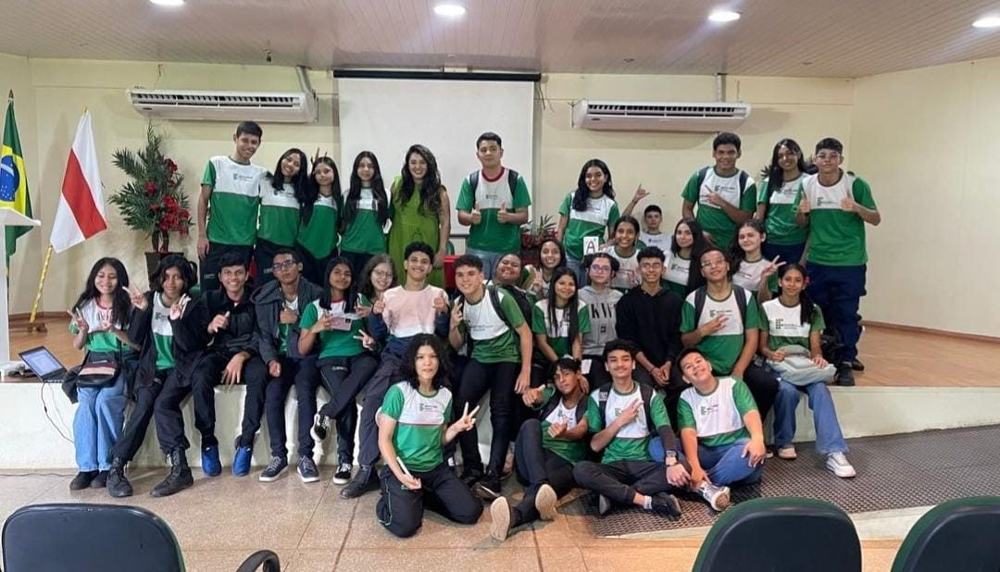

Presidente Figueiredo, Por Que Esse Nome?
Presidente Figueiredo, embora o nome pareça uma homenagem ao 30º Presidente do Brasil, João Figueiredo, na verdade homenageia outro Figueiredo: João Baptista de Figueiredo Tenreiro Aranha, o primeiro presidente da Província do Amazonas durante o Império. Inicialmente, o nome realmente pretendia homenagear João Figueiredo, mas ele recusou. Como alternativa, encontraram outro Figueiredo importante para a homenagem.
Galo da Serra O Grande Símbolo!
Você já deve ter se perguntado por que o Galo-da-Serra, esse impressionante pássaro laranja, é o símbolo do nosso município. A resposta é que ele é uma espécie única que habita essa região. No entanto, não se engane: ele não vive exclusivamente aqui. O Galo-da-Serra pode ser encontrado no Pará, Roraima, nas regiões sul e sudeste da Guiana, sul da Venezuela, Suriname e em alguns outros locais. O que torna o nosso Galo-da-Serra especial é um pequeno detalhe: uma marca branca embaixo das asas, característica que nenhuma outra população de Galo-da-Serra possui. Esse detalhe faz com que ele seja único em Presidente Figueiredo e digno de ser o símbolo do nosso município.
Fundação e o Primeiro Prefeito
Fundado no dia 10 de dezembro de 1981, Presidente Figueiredo teve como seu primeiro prefeito Mário Jorge Gomes da Costa, eleito com 185 votos, derrotando seu oponente Luiz Santana de Souza por uma diferença de apenas 15 votos (170). Durante sua gestão, ele foi responsável por importantes iniciativas, como a criação da Escola Municipal Maria Calderaro (a primeira escola estadual), da Escola Cenecista Euclides da Cunha, e do Sindicato dos Trabalhadores Rurais de Presidente Figueiredo. Além disso, Mário Jorge Gomes da Costa abriu o Ramal do Canoas, no KM 139 da BR-174, e o Ramal do Urubuí, ambos importantes para a infraestrutura local.
Diversidade, Cultura e Desentendimentos
Presidente Figueiredo, por estar perto de Manaus e ter sido criada pela administração estadual, atraiu muitos moradores da capital e migrantes de várias partes do Brasil, como Acre, Paraíba, Maranhão, Piauí, Pará, São Paulo e Pernambuco. Essa mistura de gente começou com a construção da Usina Hidrelétrica de Balbina, que trouxe cerca de 8.000 trabalhadores, muitos do Nordeste. Depois, a Agroindústria Jayoro seguiu contratando pessoas da mesma região. Muitos ficaram, criaram raízes e famílias, enquanto outros voltaram para suas terras, mas mantiveram laços com a cidade. Por outro lado, existe uma grande distância entre a população local e os indígenas Waimiri-Atroari, fruto dos conflitos durante a construção da BR-174 e da Usina de Balbina, que forçou os indígenas a recuar após muita violência. Um momento marcante foi o massacre da expedição do Padre João Giovanni Calleri, em 1986, que buscava convencer os indígenas a cederem espaço para a estrada. O episódio só aumentou a tensão entre as partes, criando a reputação de que os indígenas eram perigosos. Depois de várias mortes, a BR foi concluída e a reserva indígena foi demarcada, favorecendo o governo e interesses de mineração. Com o tempo, a paz voltou, mas ainda não houve esforços para integrar a rica cultura indígena à urbana. Enquanto os Waimiri-Atroari ainda carregam rancores, a população não indígena, em grande parte, já não tem ressentimentos, pois muitos dos atuais moradores não participaram diretamente dos conflitos.
Egydio Schwade
Falando no terrível massacre dos Waimiri-Atroari, dedicamos este espaço a uma figura fundamental na preservação dessa história: Egydio Schwade, uma verdadeira biblioteca histórica ambulante, que também foi uma das inspirações para a criação deste projeto. Mas por que homenageá-lo aqui? Porque ele é o autor do livro A Ditadura Militar e o Genocídio do Povo Waimiri-Atroari, uma obra que denuncia os horrores vividos pelos indígenas durante a construção da BR-174 e a Hidrelétrica de Balbina. Esse livro nos faz refletir e questionar: "Por que kamña matou kiña?" (Por que o não indígena matou o indígena?).
FAUNA, FLORA E MEIO AMBIENTE
Fauna
A fauna de Presidente Figueiredo é típica da Amazônia, com animais como queixadas, antas, onças e várias aves, incluindo o Galo-da-Serra, que é protegido em um parque municipal. Muitas espécies estão rareando devido à caça e à falta de conscientização sobre conservação.
Flora
A flora é diversificada, com plantas ornamentais, árvores de madeira de lei e frutas tropicais. Um viveiro florestal produz mudas de espécies nativas e plantas frutíferas. Plantas medicinais, como andiroba e copaíba, estão se tornando raras.
Meio Ambiente
Com muitos recursos naturais, como rios e cachoeiras, Presidente Figueiredo atrai turistas. O crescimento populacional, de menos de 10 mil em 1982 para mais de 32 mil em 2016, traz desafios ambientais, como poluição e uso excessivo de pesticidas. No entanto, existem várias Reservas Particulares do Patrimônio Nacional (RPPN) que ajudam na proteção da biodiversidade. Conhecida como a “Terra das Cachoeiras”, a cidade possui cerca de 159 cachoeiras catalogadas, evidenciando sua riqueza natural que precisa ser preservada.
Qual o Porquê da Existencia Deste Projeto, e Planos Futuros.
O projeto foi criado inicialmente como uma forma de a IDES 11 se encaixar no tema da SNCT, buscando chances de sermos vencedores. No entanto, eu, Victor Roberto, conhecido como Coelho, gostaria de enfatizar o quanto esse projeto se tornou especial para mim. Em poucas semanas, desenvolvi o rascunho de algo que pode ser grandioso. Baseei boa parte da pesquisa no livro Presidente Figueiredo: Nossa História em Breve Relato, de Virgílio Pereira dos Reis. Gostaria de convidar você a me ajudar a criar o que considero um grande marco para nosso município: um banco de dados sobre nossa história. Essa iniciativa valoriza e prolonga o legado para as futuras gerações, alinhando-se ao tema desta SNCT. Deixo aqui meu número para qualquer um que queira me ajudar a desenvolvê-lo. Admito que sou leigo ainda, mas juntos podemos criar algo tão necessário para nós, figueiredenses, para nossos turistas e pesquisadores. Quero fazer deste projeto uma base para tecnologias que beneficiem o nosso município. Se você deseja colaborar, entre em contato comigo pelo WhatsApp: (92) 98470-1587. Espero contar com você!
